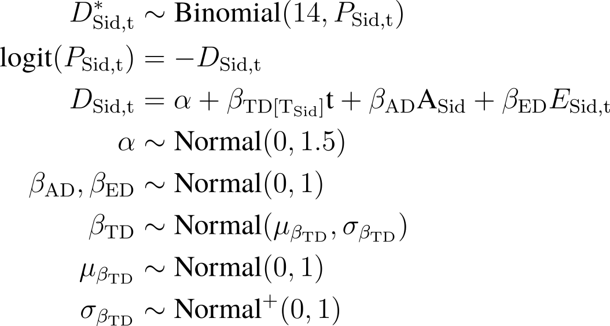
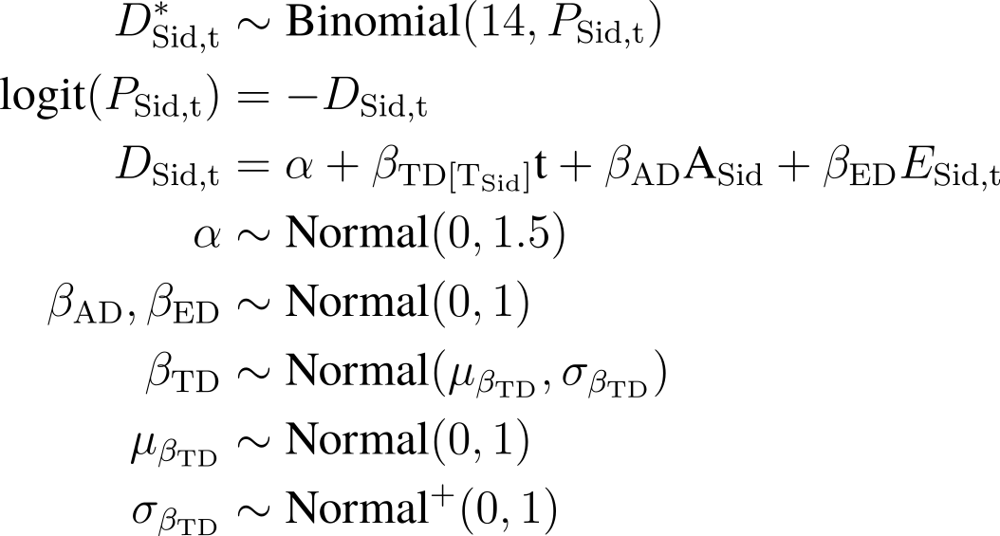

liao961120/snippets
holds the TeX snippets I’ve used to code equations and TikZ graphs. To
search the content inside the .tex files contained in this
repo, run:
bash search.sh SEARCH_TERM
To update README.md (i.e., build Gallery), run:
Rscript build.R
# Rscript build.R --full # rebuild all img from pdf
To edit LaTeX equations that get rendered with mathjax, edit
eq.md.
Textbook Equations
Taylor series
Right-click equations to copy the TeX commands to clipboard.
\[
f(x) = \sum _{n=0}^{\infty }{\frac {f^{(n)}(a)}{n!}}(x-a)^{n}
= f(a)+{\frac {f'(a)}{1!}}(x-a)+{\frac
{f''(a)}{2!}}(x-a)^{2}+{\frac
{f'''(a)}{3!}}(x-a)^{3}+\cdots
\]
Personal Snippets
Martrix Multiplication
\[
\begin{bmatrix}
1 & 0 \\
0 & 1 \\
-1 & -1
\end{bmatrix}
\begin{bmatrix}
E_1 \\
E_2
\end{bmatrix} =
\begin{bmatrix}
E_1 \\
E_2 \\
-E_1 - E_2
\end{bmatrix}
\]
Annotating Matrices
\[
\mathop{
\begin{bmatrix}
1 & 0 \\
0 & 1 \\
-1 & -1
\end{bmatrix}
}_{ Contrast }
\mathop{
\begin{bmatrix}
\sigma_{1}^{2} & \sigma_{1 2} \\
\sigma_{2 1} & \sigma_{2}^{2}
\end{bmatrix}
}_{ \substack{\phantom{S} \\ Covariance\\ Matrix } }
\mathop{
\begin{bmatrix}
1 & 0 & -1 \\
0 & 1 & -1
\end{bmatrix}
}_{ \substack{\phantom{s} \\ Contrast^T} }
=
\mathop{
\begin{bmatrix}
\sigma_{1}^{2} & \sigma_{1
2} & -\sigma_{1}^{2} - \sigma_{1 2} \\
\sigma_{2 1} &
\sigma_{2}^{2} & -\sigma_{2}^{2} - \sigma_{2 1} \\
-\sigma_{1}^{2} - \sigma_{2 1} & -\sigma_{2}^{2} - \sigma_{1 2}
& \sigma_{1}^{2} + \sigma_{2}^{2} + \sigma_{1 2} + \sigma_{2 1}
\end{bmatrix}
}_{ \substack{ Covariance~Matrix ~ (Reconstructed) } }
\]
A Bayesian Model
\[
\begin{aligned}
& \hphantom{xxxxxx} \textbf{Process Model} \\
&\begin{cases}
P_{t + \Delta t} = P_t + r P_t (1 - \frac{P_t}{K}) \Delta t \\
P_\text{t=0} ~~ = P_0 \\
\end{cases}
\\
&\begin{bmatrix}
N_1 \\
N_2 \\
\vdots \\
N_T
\end{bmatrix} \sim \text{MVNormal}(
\begin{bmatrix}
0 \\
0 \\
\vdots \\
0
\end{bmatrix},
\textbf{K} )
\\
& ~~~ k_{i,j} = \eta ~ \text{exp}( -\rho \text{d}^\text{2}_{i,j}
) \\
\end{aligned}
\]
\[
\begin{aligned}
& \hphantom{xxxx} \textbf{Measurement Model} \\
& \hphantom{xxxxx} \mathrm{ P_{t}^{obs} } \sim \text{Normal}(
M_t, \sigma ) \\
& \hphantom{xx} M_t = b ~ \left[ a P_t -
\left( 1 - a \right) N_t \right] - c
\end{aligned}
\]


 
